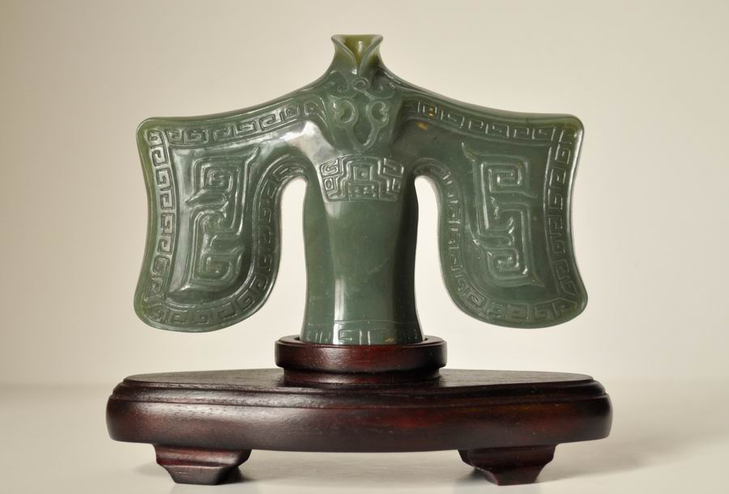

课程建设成果
传统艺术的继承 在我们的玉器工艺教学中，有战国玉器的灵动；有汉代玉器的雄风；有清代玉器的灵秀……。在一些佩玉制作中处处流露出古意和祥瑞。 黄料 仿古盉 张萍  黄龙玉 玉龙 黄龙玉 玉龙 金星石 观音菩萨 金星石 观音菩萨 青金石 仿古兽瓶 青金石 仿古兽瓶 岫岩玉 双链花篮 岫岩玉 双链花篮创新风格的显现 有意味的创新使玉器造型有了时代的气息，悠闲地鱼鹰；温馨的双鸟；浴火的凤凰显现出崭新的风采……。有些玉器作品虽然来自于传统，又脱胎于传统，有了新的气象。 碧玉 大唐盛世 吴非澴
 碧玉 玉领 李其然 碧玉 玉领 李其然 黄龙玉 菱儿弯弯金琳
黄龙玉 观音 陈日敏
 玛瑙 鱼鹰 阴然 玛瑙 鱼鹰 阴然 青金石 玉龙 杨子锐
岫岩玉 立与卧 李霜
 岫岩玉 龙凤 李业 吴非澴 岫岩玉 龙凤 李业 吴非澴 岫岩玉 玉凤 陈梦蓝
能力技巧的掌握 在玉器教学中，学生的玉器作品虽然还不够完善，但是，在玉器的造型上，器型浑然，形象简练，用线肯定；在雕琢的手法上，有了琢玉的基本技法，可见学生在玉器工艺上已经有了一定的造型能力和雕琢能力。 《凤凰涅磐》玛瑙 作者汪洋 指导教师唐蓓麟 2015玉龙奖铜奖 17×12×7
《鸾歌凤舞》黄龙玉 作者马乃瑾 指导教师唐蓓麟 2013神工奖银奖 16×16×8
《美人扇》白玉 作者李峡 指导教师唐蓓麟 2015龙宝杯金奖 28×20×8
《潇湘烟雨阁》黄龙玉 作者马君妍 指导教师唐蓓麟 2015教育部优秀毕业设计奖铜奖 12×12×12
《心有灵犀》黄龙玉 作者黄成 指导教师唐蓓麟 2013教育部优秀毕业设计奖优秀奖 15×15×9
《祝福》岫岩玉 作者卢银侠 指导教师赵丕成 2013神工奖优秀奖 2013教育部优秀毕业设计奖优秀奖 20×8×8
毕业生创业日记 我们的玉器工艺教学课堂，有近在校园内的实训工作室，也有远在云南边寨的荷花乡，我们的老师在那里讲学、授艺，得到当地领导和学生的好评。我们学院的学生作品在上海“神工奖”获得多项奖项，得到社会的肯定。 初步成形
 翡翠 会心菩提 荣获2015中国玉石雕神工奖-铜奖 翡翠 会心菩提 荣获2015中国玉石雕神工奖-铜奖  翡翠 九如圆梦 荣获2015中国玉石雕神工奖-铜奖 翡翠 九如圆梦 荣获2015中国玉石雕神工奖-铜奖  凤凰涅槃 凤凰涅槃 杨子锐 首饰 翎韵-戒指 荣获2015中国玉石雕神工奖-玉首饰-入围奖
杨子锐 首饰 翎韵-耳坠 荣获2015中国玉石雕神工奖-玉首饰-入围奖
杨子锐 首饰 灵芦-1
杨子锐 首饰 灵芦-2
 手艺历练 手艺历练  专心致志 专心致志  原料与成品 原料与成品  设计稿 设计稿  设计1 设计1  设计2 设计2 设计3
 杨子锐创业团队1 杨子锐创业团队1  杨子锐团队2 杨子锐团队2 |
| 珠宝设计网站 中国珠宝设计网 国际珠宝网 傲宝网 BACCARAT |
雕塑设计网站 中国雕塑网 |
玉器图库 一些挂件 一些手把件 一些摆件 |
玉器设计与雕刻大赛 上海玉器雕刻神功奖 上海玉器雕刻玉龙奖 北京玉器雕刻天工奖 |
玉器设计与工艺发展动态 玉器设计与工艺过去 玉器设计与工艺现在 玉器设计与工艺未来 |